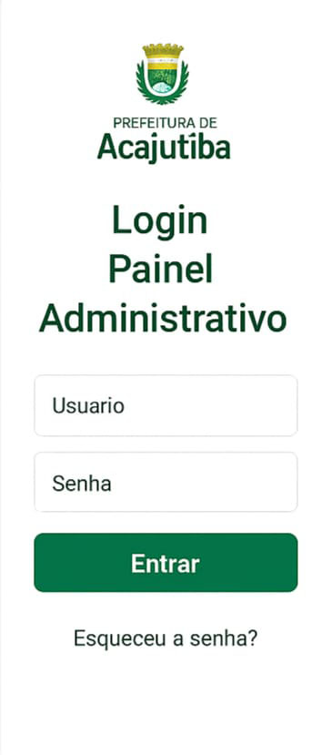
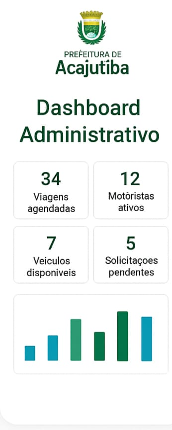
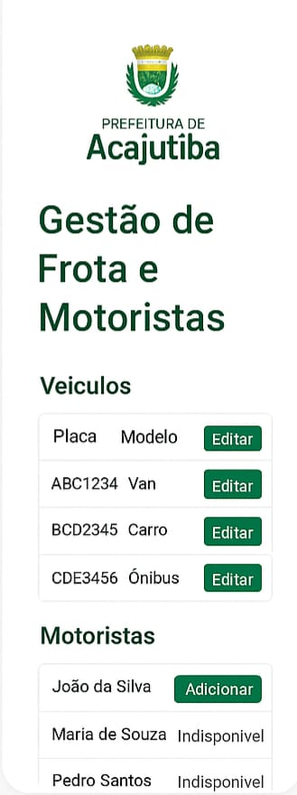

4. Protótipos
4.1 Aplicativo Paciente TFD

Tela de Login / Cadastro

Solicitação de Viagem

Histórico de Viagens

Notificações e Status
4.2 Painel Web Administrativo

Login Painel Administrativo

Dashboard com métricas
Gestão de Solicitações TFD

Gestão de Frota e Motoristas